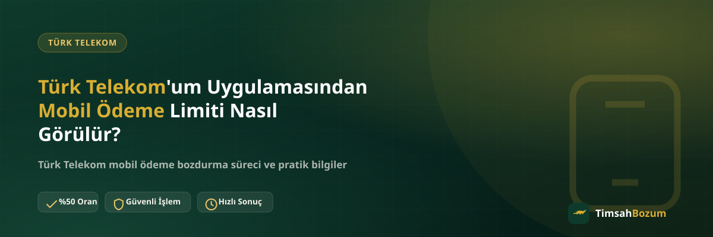

Türk Telekom hattı olan pek çok kişi, bakiyesini bozdurmadan önce "bu rakamı uygulamanın neresinde bulacağım?" sorusuna takılıyor. Aslında birkaç dokunuşluk bir yol, ama hangi sekmeye veya karta bakman gerektiğini bilmemek gereksiz yere zaman kaybettiriyor. Bu yazıda Türk Telekom'um uygulaması içinde mobil ödeme limitine ulaşmanın somut adımlarını, karşılaşabileceğin görüntüleme sorunlarını ve bu rakamın bozum sürecindeki yerini anlatıyoruz.
Türk Telekom'um Uygulamasında Limit Bilgisi Nerede Yer Alır?
Türk Telekom'um, hattına dair pek çok veriyi tek bir ekran akışında sunuyor ve mobil ödeme limiti de bunlardan biri. Rakam çoğunlukla derin bir menünün içine gizlenmiyor, uygulamayı açtığında karşına çıkan özet ekranının bir parçası oluyor. Bu da işlemi, sayfalar arasında dolaşmaktan çok daha pratik hale getiriyor.
Uygulamaya Girince İlk Nereye Bakmalısın?
Türk Telekom'um'a giriş yaptıktan sonra karşına çıkan ilk ekran genellikle hattınla ilgili bir kullanım özeti sunar. Bu özetin içinde ya da hemen yanında mobil ödemeye dair bir satır veya ayrı bir kutu bulunur. Çoğu zaman rakamı görmek için ekstra bir dokunuşa bile gerek kalmaz, sayfa açılır açılmaz karşına çıkar.
Ana Ekranda Yoksa Hangi Sekmeye Bakmalısın?
Bazı uygulama sürümlerinde bu bilgi ana ekranda değil, "Faturam" veya "Kullanımlarım" başlıklı sekmenin altında saklı olabiliyor. Bu sekmeye girdiğinde faturana yansıyan kalemler arasında mobil ödemeyle ilgili bir başlık göreceksin. Menü adları zaman zaman güncellemeyle değişebildiği için, tam kelimeyi bulamazsan "kullanım" veya "fatura" geçen sekmelere göz atmak en pratik yöntem.
Eski Sürümde Rakam Neden Görünmeyebilir?
Türk Telekom'um'un güncel olmayan bir sürümü bazı ekranların hiç yüklenmemesine ya da eksik veri göstermesine sebep olabilir. Rakam boş görünüyorsa veya sayfa sürekli yükleniyor gibi kalıyorsa, önce uygulama mağazasından bir güncelleme olup olmadığını kontrol etmen gerekir. Güncelleme limitini kendiliğinden değiştirmez, sadece ekranın doğru veriyi çekmesini sağlar.
Bildirimler Limit Değişikliğini Haber Verir mi?
Uygulama bildirimlerin açıksa Türk Telekom, hattınla ilgili bazı önemli güncellemeleri anlık bildirim olarak iletebilir. Ancak her limit değişikliği mutlaka bir bildirimle önüne düşmeyebilir; bu yüzden bildirime tamamen güvenmek yerine ara sıra uygulamayı açıp rakamı doğrudan kontrol etmek daha sağlam bir alışkanlık.
Uygulamaya Giriş Yapamıyorsan Rakamı Nasıl Görürsün?
Şifreni unutma, telefon değişikliği veya SIM kart yenileme gibi durumlarda uygulamaya girmekte zorlanabilirsin. Böyle bir durumda önce "şifremi unuttum" adımını denemen, olmuyorsa Türk Telekom müşteri hizmetlerini arayarak bilgi alman mümkün. Giriş sorunu yaşaman, hattındaki limit veya bakiye bilgisinin bir şekilde kaybolduğu anlamına gelmez; veri Türk Telekom'un sisteminde durmaya devam eder, sadece görüntüleme kanalın geçici olarak değişir.
Web Üzerinden de Kontrol Etmek Mümkün mü?
Türk Telekom'un web sitesi üzerinden hesabına giriş yaparak benzer kullanım bilgilerine ulaşman da mümkün olabilir, ancak mobil uygulama genellikle daha hızlı yükleniyor ve arayüzü daha güncel tutuluyor. Bilgisayar başında değilsen veya anlık bir kontrol yapmak istiyorsan Türk Telekom'um uygulaması en pratik seçenek olmaya devam ediyor. İki kanal da aynı hesabın verisini gösterdiği için hangisini kullandığın rakamı değiştirmez, sadece erişim şeklini değiştirir.
Gördüğün Rakam ile Bozdurabileceğin Bakiye Aynı mı?
Uygulamada gördüğün limit, Türk Telekom'un hattına tanıdığı üst sınırdır; bu rakamın tamamının hattında biriktiği anlamına gelmez. Türk Telekom mobil ödeme bozdurma işleminde bizim baktığımız şey, limit değil hattında o an fiilen oluşmuş bakiyenin güncel ekran görüntüsü. Bu ayrımı bilmek, "limitim şu kadardı, bu kadar bozdururum" gibi yanlış bir beklentiye girmeni önler.
Uygulamada Gördüğün Rakamı Bize Göndermen Gerekir mi?
Hayır. Bozum işlemi için limit ekranının görüntüsüne ihtiyacımız yok; ihtiyacımız olan tek şey hattında fiilen oluşmuş bakiyenin güncel ve okunaklı bir ekran görüntüsü. Limit bilgisi tamamen senin kendi takibin için faydalı, işlemi başlatırken ayrıca belirtmene gerek yok.
Limit Ekranını Kontrol Ettikten Sonra Bozum Süreci Nasıl İşler?
Uygulamadan bakiyenin güncel görüntüsünü aldıktan sonra bu görseli WhatsApp hattımıza (+90 543 887 21 71) iletmen yeterli. Güncel oranı teyit ediyoruz, onay verdiğinde ödemen WhatsApp üzerinden görüşülen yöntemle yapılıyor. Süreçte üyelik, form doldurma veya kimlik belgesi istenmiyor; hattına erişim de talep edilmiyor. Güncel bilgiyi her zaman WhatsApp'tan teyit etmen, yanlış bir orana göre beklenti oluşturmanı önler.
Ekran Görüntüsü Alırken Nelere Dikkat Etmelisin?
Ekran görüntüsünde bakiye rakamının ve tarihin net görünmesi önemli. Bulanık ya da eski bir görüntü paylaşman, bilgiyi tekrar istememize ve sürecin gecikmesine yol açar. Görüntüyü alırken bildirim çubuğunun rakamı örtmediğinden emin olman da küçük ama işe yarayan bir detay.
Sık Karşılaşılan Görüntüleme Sorunları
En sık karşılaşılan durumlardan biri, uygulama açıldığında rakamın bir süre yüklenmemesi; bu genellikle zayıf internet bağlantısından kaynaklanıyor ve sayfayı yenilemek çoğu zaman sorunu çözüyor. Bir diğer durum ise güncel olmayan uygulama sürümünde bazı kartların hiç görünmemesi; bu durumda mağazadan güncelleme yapmak en pratik çözüm. Her iki durumda da hattındaki gerçek veri kaybolmuyor, sadece görüntüleme tarafında geçici bir aksaklık yaşanıyor.
İlgili Yazılar
- Türk Telekom Mobil Ödeme Limitini Nasıl Öğrenirim?
- Vodafone'um Uygulamasından Mobil Ödeme Limiti Nasıl Görülür?
- Mobil Ödeme Limitim Ne Kadar? Nasıl Öğrenirim?
Türk Telekom'um'dan bakiyenin güncel görüntüsünü aldıktan sonra bozdurmak istersen, WhatsApp hattımıza yazarak sürecini başlatabilirsin.